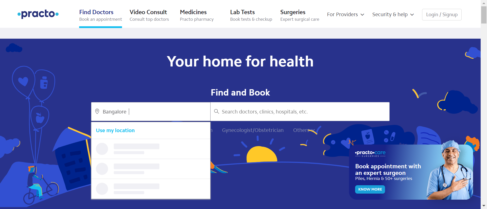
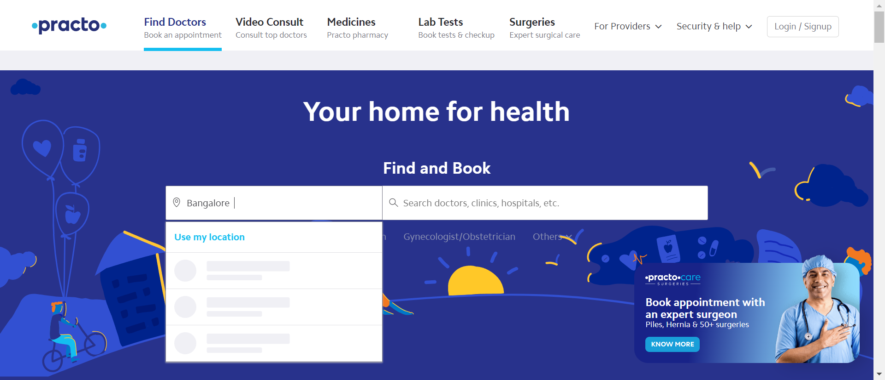
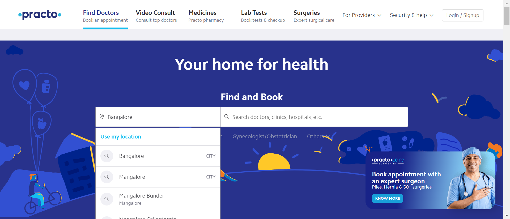
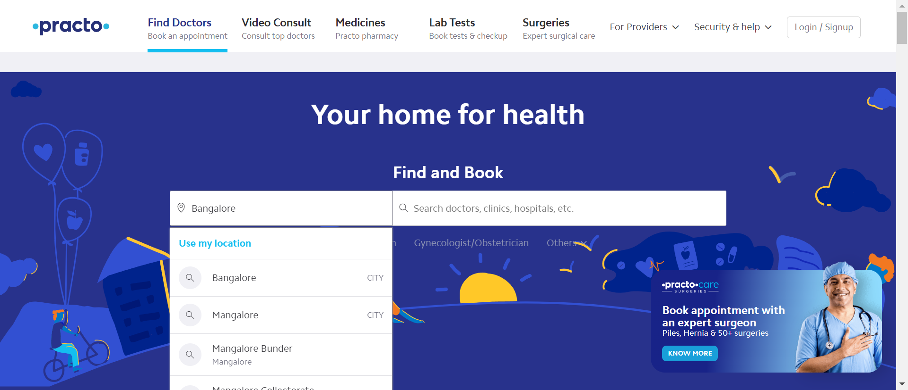

-
Practo website
10:53:14 am / 00:04:06:676 Fail
Practo website
02.28.2024 10:53:14 am 02.28.2024 10:57:21 am 00:04:06:676 · #test-id=1PassValidate HomepageGiven user is on the practo siteStepDefination.Hooks.addScreenshot(io.cucumber.java.Scenario)Validate Homepage When user validate the homepageStepDefination.Hooks.addScreenshot(io.cucumber.java.Scenario)Validate Homepage
When user validate the homepageStepDefination.Hooks.addScreenshot(io.cucumber.java.Scenario)Validate Homepage PassClick Find DoctorsGiven user is on the practo siteStepDefination.Hooks.addScreenshot(io.cucumber.java.Scenario)Click Find Doctors
PassClick Find DoctorsGiven user is on the practo siteStepDefination.Hooks.addScreenshot(io.cucumber.java.Scenario)Click Find Doctors When user click Find doctors on the header sectionStepDefination.Hooks.addScreenshot(io.cucumber.java.Scenario)Click Find Doctors
When user click Find doctors on the header sectionStepDefination.Hooks.addScreenshot(io.cucumber.java.Scenario)Click Find Doctors PassEnter LocationGiven user is on the practo siteStepDefination.Hooks.addScreenshot(io.cucumber.java.Scenario)Enter Location
PassEnter LocationGiven user is on the practo siteStepDefination.Hooks.addScreenshot(io.cucumber.java.Scenario)Enter Location When user Enter the location and select the locationStepDefination.Hooks.addScreenshot(io.cucumber.java.Scenario)Enter LocationFailEnter SpecializationGiven user is on the practo siteStepDefination.Hooks.addScreenshot(io.cucumber.java.Scenario)Enter Specialization
When user Enter the location and select the locationStepDefination.Hooks.addScreenshot(io.cucumber.java.Scenario)Enter LocationFailEnter SpecializationGiven user is on the practo siteStepDefination.Hooks.addScreenshot(io.cucumber.java.Scenario)Enter Specialization When user search for specialization and selectStepDefination.Hooks.addScreenshot(io.cucumber.java.Scenario)Enter SpecializationFailSelect GenderGiven user is on the practo siteStepDefination.Hooks.addScreenshot(io.cucumber.java.Scenario)Select GenderWhen user choose gender in the filtersStepDefination.Hooks.addScreenshot(io.cucumber.java.Scenario)Select Gender
When user search for specialization and selectStepDefination.Hooks.addScreenshot(io.cucumber.java.Scenario)Enter SpecializationFailSelect GenderGiven user is on the practo siteStepDefination.Hooks.addScreenshot(io.cucumber.java.Scenario)Select GenderWhen user choose gender in the filtersStepDefination.Hooks.addScreenshot(io.cucumber.java.Scenario)Select Gender FailSelect PatientStoriesGiven user is on the practo siteStepDefination.Hooks.addScreenshot(io.cucumber.java.Scenario)Select PatientStories
FailSelect PatientStoriesGiven user is on the practo siteStepDefination.Hooks.addScreenshot(io.cucumber.java.Scenario)Select PatientStories When user choose patientstories in the filterStepDefination.Hooks.addScreenshot(io.cucumber.java.Scenario)Select PatientStories
When user choose patientstories in the filterStepDefination.Hooks.addScreenshot(io.cucumber.java.Scenario)Select PatientStories FailSelect ExperienceGiven user is on the practo siteStepDefination.Hooks.addScreenshot(io.cucumber.java.Scenario)Select Experience
FailSelect ExperienceGiven user is on the practo siteStepDefination.Hooks.addScreenshot(io.cucumber.java.Scenario)Select Experience When user choose experience in the filterStepDefination.Hooks.addScreenshot(io.cucumber.java.Scenario)Select Experience
When user choose experience in the filterStepDefination.Hooks.addScreenshot(io.cucumber.java.Scenario)Select Experience FailSelect Fees and AvailabilityGiven user is on the practo siteStepDefination.Hooks.addScreenshot(io.cucumber.java.Scenario)Select Fees and Availability
FailSelect Fees and AvailabilityGiven user is on the practo siteStepDefination.Hooks.addScreenshot(io.cucumber.java.Scenario)Select Fees and Availability When user choose fees and avaliable in the filterStepDefination.Hooks.addScreenshot(io.cucumber.java.Scenario)Select Fees and Availability
When user choose fees and avaliable in the filterStepDefination.Hooks.addScreenshot(io.cucumber.java.Scenario)Select Fees and Availability FailSelect RelevanceGiven user is on the practo siteStepDefination.Hooks.addScreenshot(io.cucumber.java.Scenario)Select RelevanceWhen user choose relevance in the filterStepDefination.Hooks.addScreenshot(io.cucumber.java.Scenario)Select Relevance
FailSelect RelevanceGiven user is on the practo siteStepDefination.Hooks.addScreenshot(io.cucumber.java.Scenario)Select RelevanceWhen user choose relevance in the filterStepDefination.Hooks.addScreenshot(io.cucumber.java.Scenario)Select Relevance PassFilter ResultGiven user is on the practo siteStepDefination.Hooks.addScreenshot(io.cucumber.java.Scenario)Filter Result
PassFilter ResultGiven user is on the practo siteStepDefination.Hooks.addScreenshot(io.cucumber.java.Scenario)Filter Result Then user see the resultStepDefination.Hooks.addScreenshot(io.cucumber.java.Scenario)Filter Result
Then user see the resultStepDefination.Hooks.addScreenshot(io.cucumber.java.Scenario)Filter Result PassClick SurgeriesGiven user is on the practo pageStepDefination.Hooks.addScreenshot(io.cucumber.java.Scenario)Click SurgeriesWhen user clicks on surgeris on header sectionStepDefination.Hooks.addScreenshot(io.cucumber.java.Scenario)Click Surgeries
PassClick SurgeriesGiven user is on the practo pageStepDefination.Hooks.addScreenshot(io.cucumber.java.Scenario)Click SurgeriesWhen user clicks on surgeris on header sectionStepDefination.Hooks.addScreenshot(io.cucumber.java.Scenario)Click Surgeries PassValidate SurgeryPageGiven user is on the practo pageStepDefination.Hooks.addScreenshot(io.cucumber.java.Scenario)Validate SurgeryPage
PassValidate SurgeryPageGiven user is on the practo pageStepDefination.Hooks.addScreenshot(io.cucumber.java.Scenario)Validate SurgeryPage When user validate the surgerypageStepDefination.Hooks.addScreenshot(io.cucumber.java.Scenario)Validate SurgeryPage
When user validate the surgerypageStepDefination.Hooks.addScreenshot(io.cucumber.java.Scenario)Validate SurgeryPage FailScrolldown the PageGiven user is on the practo siteStepDefination.Hooks.addScreenshot(io.cucumber.java.Scenario)Scrolldown the Page
FailScrolldown the PageGiven user is on the practo siteStepDefination.Hooks.addScreenshot(io.cucumber.java.Scenario)Scrolldown the Page When user scrolldown the pageStepDefination.Hooks.addScreenshot(io.cucumber.java.Scenario)
When user scrolldown the pageStepDefination.Hooks.addScreenshot(io.cucumber.java.Scenario)
-
org.openqa.selenium.remote.UnreachableBrowserException
1 tests
org.openqa.selenium.remote.UnreachableBrowserException
1 failedStatus Timestamp TestName Fail 10:57:15 am StepDefination.Hooks.addScreenshot(io.cucumber.java.Scenario) Practo website.Scrolldown the Page.StepDefination.Hooks.addScreenshot(io.cucumber.java.Scenario) -
org.openqa.selenium.NoSuchElementException
6 tests
org.openqa.selenium.NoSuchElementException
6 failedStatus Timestamp TestName Fail 10:55:32 am When user search for specialization and select Practo website.Enter Specialization.When user search for specialization and selectFail 10:55:47 am When user choose gender in the filters Practo website.Select Gender.When user choose gender in the filtersFail 10:56:00 am When user choose patientstories in the filter Practo website.Select PatientStories.When user choose patientstories in the filterFail 10:56:14 am When user choose experience in the filter Practo website.Select Experience.When user choose experience in the filterFail 10:56:28 am When user choose fees and avaliable in the filter Practo website.Select Fees and Availability.When user choose fees and avaliable in the filterFail 10:56:42 am When user choose relevance in the filter Practo website.Select Relevance.When user choose relevance in the filter
-
@smoke
13 tests
@smoke
6 passed 7 failedStatus Timestamp TestName Pass 10:53:14 am Validate Homepage Practo website.Validate HomepagePass 10:53:19 am Click Find Doctors Practo website.Click Find DoctorsPass 10:54:41 am Enter Location Practo website.Enter LocationFail 10:55:29 am Enter Specialization Practo website.Enter SpecializationFail 10:55:43 am Select Gender Practo website.Select GenderFail 10:55:57 am Select PatientStories Practo website.Select PatientStoriesFail 10:56:11 am Select Experience Practo website.Select ExperienceFail 10:56:25 am Select Fees and Availability Practo website.Select Fees and AvailabilityFail 10:56:39 am Select Relevance Practo website.Select RelevancePass 10:56:53 am Filter Result Practo website.Filter ResultPass 10:56:58 am Click Surgeries Practo website.Click SurgeriesPass 10:57:07 am Validate SurgeryPage Practo website.Validate SurgeryPageFail 10:57:11 am Scrolldown the Page Practo website.Scrolldown the Page
Started
Feb 28, 2024 10:52:24 am
Ended
Feb 28, 2024 10:57:21 am
Features Passed
0
Features Failed
1
Features
Scenarios
Steps
Timeline
Tags
| Name | Passed | Failed | Skipped | Others | Passed % |
|---|---|---|---|---|---|
| @smoke | 6 | 7 | 0 | 0 | 46.154% |